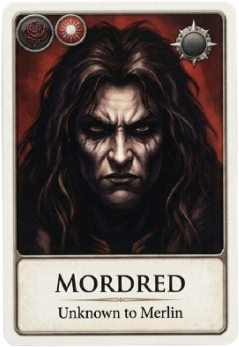
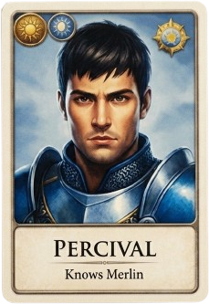
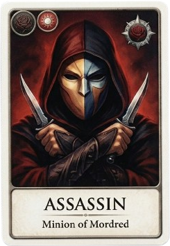
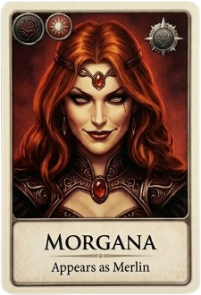
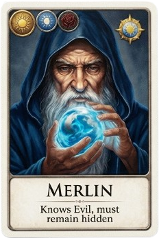

A Game of Hidden Loyalty · 5–10 Players
AVALON
阿瓦隆
⚜
Beneath the Round Table, truth flickers in the firelight.





Loyal Servants of Arthur
against
Minions of Mordred
Every phone becomes a secret role card. A narrator guides the night, knights argue at the round table, and sealed votes decide five quests. Good must win three. Evil only needs to hide, or to find Merlin.
Secret RolesMerlin, Percival, Morgana, Mordred, Oberon & the Assassin
Voiced NightStep-by-step narration with timed reveals
Narrator ViewiPad dashboard for the table: quests, votes, log
English · 中文Switch languages any time, mid-game included
4
5